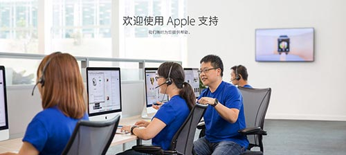
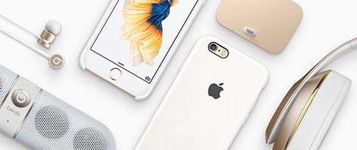

苹果产品保修政策解读

一、 iPhone 5S的保修及维修政策
答：（1）保修期内的符合保修的：整机更换的 iPhone 享有重新计算的 1 年保修期。更换的部件和配件享受原有 1 年保修期的剩余时长或 90 天的保修
(2)非保修做交换机的：享受原有 1 年保修期的剩余时长或 90 天的保修期，以其中时间较长者为准
二、iPhone 5S哪些故障是不换机的
iPhone 5S屏幕、 home键、听筒、电池、振动器、外放模块是单换的。
iPhone 5S换机、后享受原有 1 年保修期的剩余时长或 90 天的保修期以其中时间较长者为准
三、 iPhone6和iPhone6plus的保修及维修政策
答：(1)保修期内的符合保修的：整机更换的 iPhone 享有重新计算的 1 年保修期。更换的部件和配件享受原有 1 年保修期的剩余时长或 90 天的保修期，以其中时间较长者为准
答：(2)非保修做交换机的：换机，享受原有 1 年保修期的剩余时长或 90 天的保修期，以其中时间较长者为准
四、iPhone 6和iPhone 6plus哪些故障是不换机的
答：iPhone 6 后摄像头、电池、振动器是单换的。
iPhone 6plus后摄像头、电池、振动器.单换的。
五、 iPhone6S和iPhone6Splus的保修及维修政策
答：(1)保修期内的符合保修的：整机更换的 iPhone 享有重新计算的 1 年保修期。更换的部件和配件享受原有 1 年保修期的剩余时长或 90 天的保修期，以其中时间较长者为准
答：(2)非保修做交换机的：换机，享受原有 1 年保修期的剩余时长或 90 天的保修期，以其中时间较长者为准
六、iPhone 6S和iPhone 6Splus哪些故障是不换机的
答：iPhone 6S 后摄像头、电池、振动器是单换的。
iPhone 6Splus后摄像头、电池、振动器.单换的。
苹果手机产品换机须知

1.换机条件建议是在保修期内的国行或者港版手机；
2.请描述机器型号（如：国行苹果6金 64G/港版苹果6Plus|银l28G移动苹果6Plus 16G )
3.请描述故障内容：如碎屏、机身弯曲、进水、外壳磕碰、不开机、
4.维修史：有无拆修（这条很重要，尤其是在外面小店拆过修过修不好或者修过还有问题的机器，一律拒收苹果也不会接）
5.关于碎屏：很多客户以为在外面小店换个屏就可以了！本店也不建议这种做法，这种暂时省小钱将来花大钱的行为让很多客户悔不当初！比如发烫，闪屏，耗电特快，触摸不灵。。。等等问题！而且会失去保修得不偿失！
注：如机器无任何故障补差价可申请、跨代换机、也可颜色调换
我们的宗旨：为所有苹果用户解决后顾之忧，提供让您满意的服务。